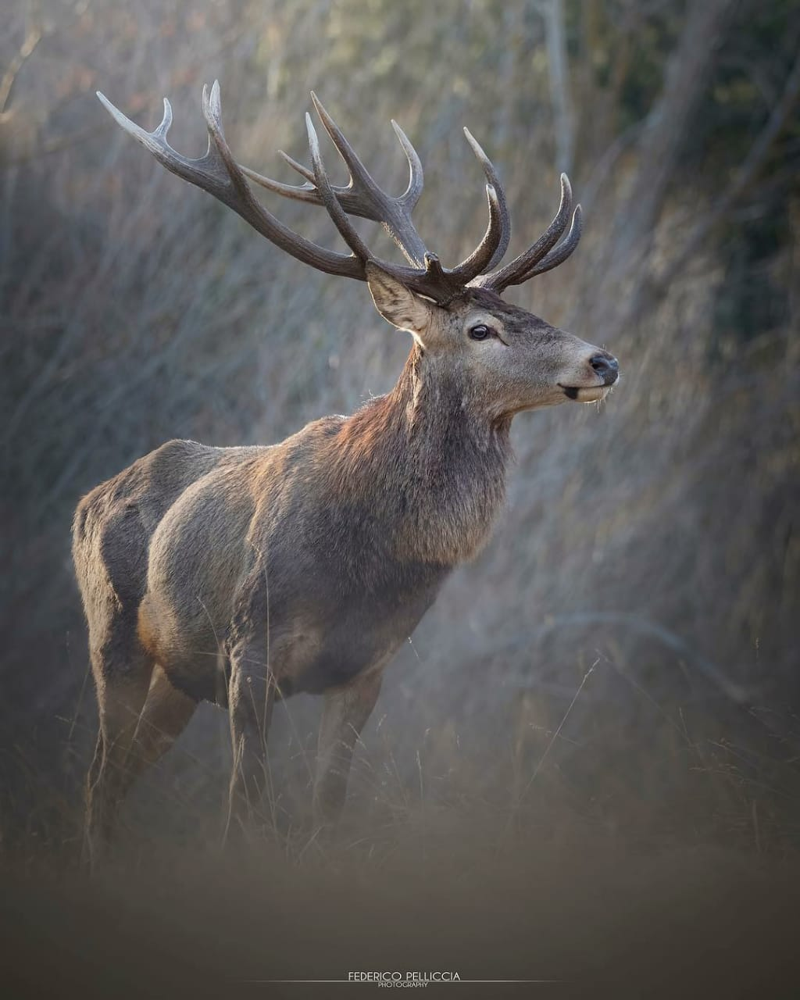
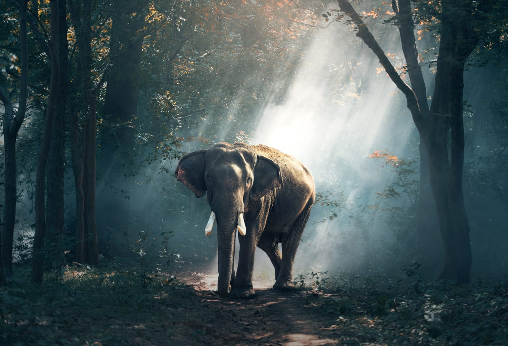
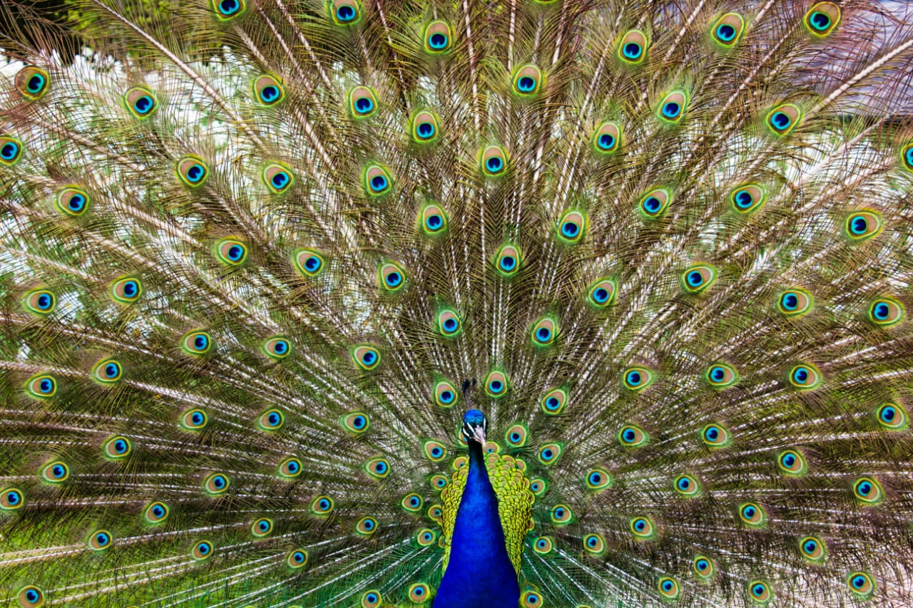

Dalma WildLife Sanctuary
Hazaribagh Wild Life Sanctuary
Palamau Tiger Reserve

|
|
|---|---|
Dalma WildLife Sanctuary | |
| > | Dalma Wildlife Sanctuary, located around the Dalma Hills 10 km from Jamshedpur City in Jharkhand, was inaugurated by Sanjay Gandhi in 1975. The vast Dalma Wildlife Sanctuary begins from Chandil to 40 km east and sprawls around 195 sq km on paper. The Wildlife Sanctuary offers shelter to Elephants, Barking Deer, Sloth Bear and Porcupines as the major inhabitants. Forest cover has been uncovered up to 90% due to the selective pilferage by timber mafia for years. |
Hazaribagh Wild Life Sanctuary | |
|  | Hazaribagh Wildlife Sanctuary, around 55 miles (89 km) north of Ranchi in Jharkhand, was established in 1955. At an average height of 615 mtrs (2,018 ft) from the sea level, Hazaribagh spreads in an area of 184 sq km (71 sq miles) in a low hilly terrain. The wildlife sanctuary houses leopards, panthers, wild boars, tigers, sambar, nilgai, chital, peafowl, sloth bears, black bears, hyenas and pigeons. |
Palamau Tiger Reserve | |
|
Palamau Tiger Reserve, among the nine original tiger reserves in India, forms part of Betla National Park, in Palamu District in Jharkhand. Under the Indian Forests Act, this area was set aside as a protected land in 1947. Becoming the tiger reserve in 1974, Palamau Tiger Reserve spreads in an area of 1,014 sq km (392 sq miles) with a core area of 414 sq km and a buffer area of 600 sq km. Before getting the identity of a reserve, the land was utilized for cattle grazing and camping, and the area was highly prone to jungle fire. |
Betla National Park | |
|  | Betla National Park, lying in the Chota Nagpur Plateau of the Palamu District in Jharkhand, possesses a big range of wild life. Initially it consisted of 1,026 sq km of the Palamau Tiger Reserve, and later an additional 226 sq km in 1989 and another 63 sq km of the Mahuadar Wolf Sanctuary was added to the sanctuary. Betla is among the first national parks in India to become a tiger reserve under Project Tiger. Elephants are also found here in large number. |